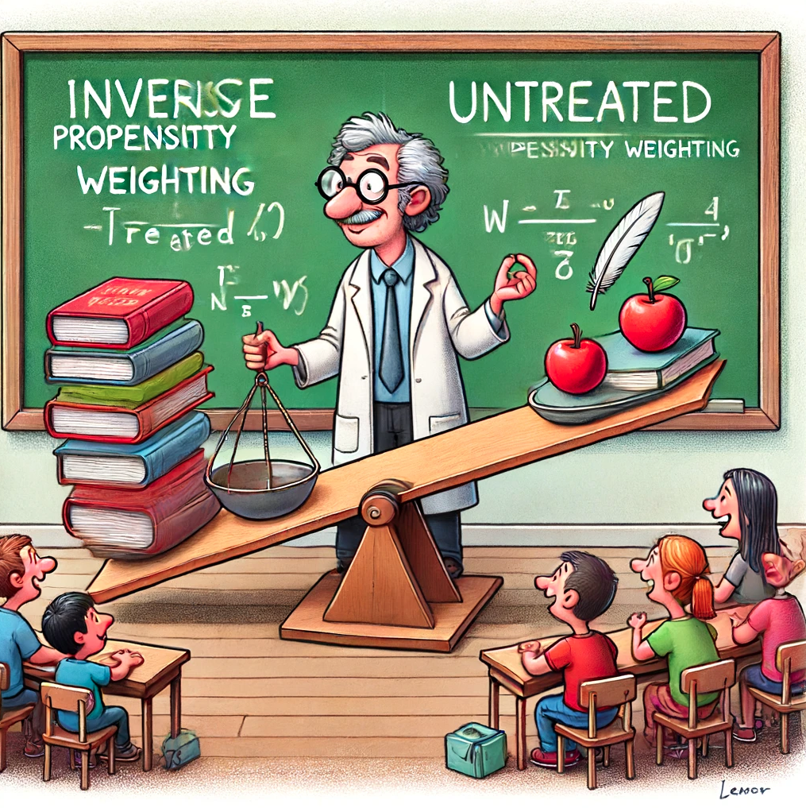

Recommendations as treatments
This is the summary of “Recommendations as Treatments” (paper) by Joachims et al.

The main proposal of the paper is to review recommendation systems to be considered as policies that decide what interventions to make in order to optimize a desired outcome. This opens the door for us to apply Causal Inference techniques in the context of recommendations systems, such as Inverse Propensity Weighting.
Offline A/B testing or Off-policy evaluation of recommender systems
The idea is to use historical data to evaluate recommender systems and obtain unbiased estimates without resorting to online A/B tests, which can be slow, expensive and risky in terms of hurting the CX.
If we can evaluate different recommendation policies offline (i.e. which policy would have performed best, if we had used it instead of the policy that logged the data), we will be able to find optimal policies, i.e. innovate faster.
Problem with offline A/B tests
Consider, we have two recommendation policies/models: a) Logging policy (the current production model and b) Target policy (the new policy we would like to test). Since the historical evaluation data is actually produced by the Logging policy, the distribution of the data will follow the Logging policy’s output distributions or whatever it has learned to output. Evaluating the Target policy on this data will be biased by whatever the Logging policy favors/outputs.
For example:
Consider a simple movie recommender for a video streaming service. Imagine that, at each visit, the recommender selects a single movie to suggest to the users after they log in. Assume that we have collected data from this recommender using a stochastic policy whose distribution is weighted towards more popular movies, such as blockbuster superhero movies. When we use these data offline to evaluate new policies, we may mistakenly conclude that policies that favor superhero movies are better, since these movies are over-represented. This is the so-called ‘‘rich-get-richer” effect, wherein things that are already very successful become more so due to their ubiquity. At the same time, we may miss opportunities to provide more personalized recommendations due to insufficient data in certain niches. For instance, consider a user whose favorite genre is Scandinavian thrillers. They might also appreciate superhero movies, so recommending them an installment from the Avengers franchise is a safe bet. Yet that would be suboptimal; they would much prefer Midsommar, a horror film set in Sweden.
Another way to put it is to understand that both the actions and the rewards are biased by the production policy.
1. Actions in the logged data are biased because:
- Production Policy’s Influence: The production policy (the system currently in use) determines which actions (e.g., recommendations) are made. If this policy has a preference for certain actions (like recommending popular movies), the data collected will be biased towards these actions.
- Skewed Data: This means the observed actions in your data are not a random sample but are influenced by the production policy’s preferences. Therefore, some actions are overrepresented while others are underrepresented or not represented at all.
2. Rewards in the logged data are biased because:
- Dependent on Actions: The rewards (e.g., clicks, purchases) are outcomes that result from the actions taken. Since the actions themselves are biased, the observed rewards are also biased. Popular items might receive more interactions simply because they are recommended more often, not necessarily because they are inherently better.
- Conditional Bias: The rewards are conditional on the biased actions. For instance, the reward distribution for popular items might appear artificially inflated because these items are seen more frequently due to the production policy’s bias.
Solution using Inverse Propensity Weighting
In short, since the logged rewards are produced by the current production model, we can debias them by using the inverse propensity weights of the production model.
Let’s consider an example:
- x - contextual features
- a - action/recommendation by the policy. For the sake of explanation, let’s say we have 3 possible actions: action_A, action_B, action_C
- π - production policy. In this example, the production policy π’s propensity scores for the 3 possible actions are: 0.75, 0.15, and 0.10
- π_new - new policy. In this example, the new policy π_new’s propensity scores for the 3 possible actions are: 0.30, 0.6, 0.10
- n - total number of samples
- r - reward from the action
Case #1:
π recommends action_A, and the user likes the recommendation and clicks on it.
The utility score of π will be 1 (total correct_recommendations / total recommendations = 1 / 1 = 1). On the other hand, the utility score of π_new will be:
propensity of π_new for action_A * (1 / propensity of π for action_A) / total recommendations = 0.30 * (1 / 0.75) / 1 = 0.4
Comparing the utilities, we observe the production policy π (utility=1) to be better than the new policy π_new (utility=0.4).
Case #2:
π recommends action_A, and the user likes the recommendation and clicks on it. π_new also has the highest propensity score for action_A with 0.9.
The utility score of π will be 1 (total correct_recommendations / total recommendations = 1 / 1 = 1). On the other hand, the utility score of π_new will be:
propensity of π_new for action_A * (1 / propensity of π for action_A) / total recommendations = 0.90 * (1 / 0.75) / 1 = 1.2
Comparing the utilities, we observe the new policy π_new (utility=1.2) to be better than the production policy π (utility=1).
Case #3:
π recommends action_A, but the user doesn’t like the recommendation and clicks on action_B.
The utility score of π will be 0 (total correct_recommendations / total recommendations = 0 / 1 = 0). On the other hand, the utility score of π_new will be:
propensity of π_new for action_B * (1 / propensity of π for action_B) / total recommendations = 0.60 * (1 / 0.15) / 1 = 4
Comparing the utilities, we observe the new policy π_new (utility=4) to be better than the production policy π (utility=0).
In summary, the weighting mechanism of IPW helps us to understand how a new policy would have performed by explicitly handling the biases that exist in the offline evaluation data produced by the existing policy (e.g. the big get bigger effect).
By weighting each observed interaction with the inverse propensity of the production policy, we are essentially placing more importance on samples with lower probability to be recommended by the production policy and placing lower importance on samples with higher probability.
As illustrated in the examples above, this helps us to understand if the new policy performs better than the existing policy.
This summary captures the main idea behind using Causal Inference techniques in the context of recommendation engines. I have left out several interesting gems presented in the original paper (e.g. counterfactual risk minimization, fairness of recommendation engines, etc.), so have a look at the paper if you are interested in learning more :).